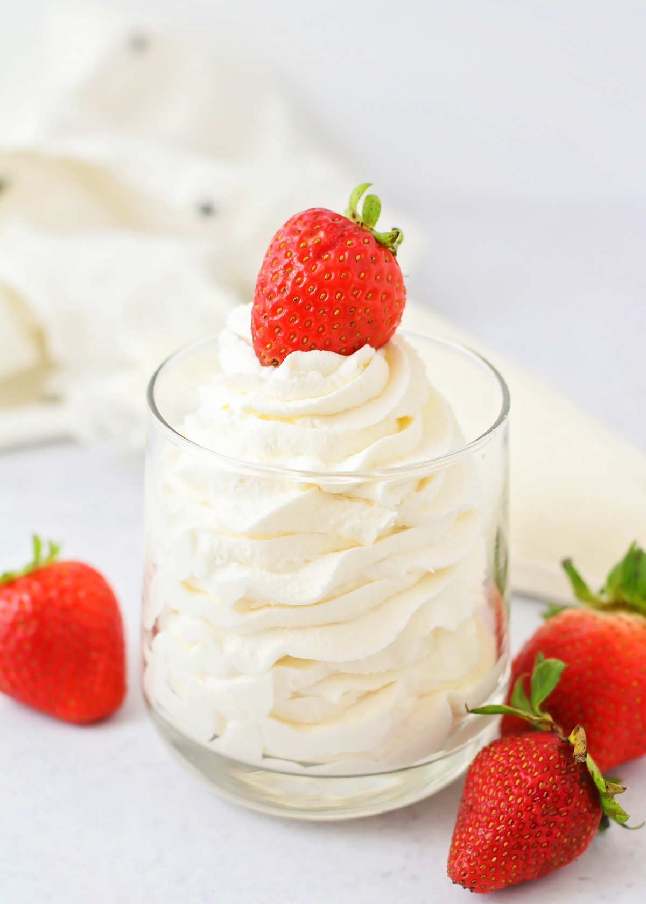

Whipped Cream

Description
This homemade whipped cream is easy to make with just three ingredients and it holds its shape perfectly. With this you can top off your favourite treats!
Ingredients
- Heavy cream
- Confectioners' sugar
- Vanilla extract
Steps
- Whisk cream in a chilled glass or metal bowl with an electric mixer until frothy. Add confectioners' sugar and vanilla; continuing to beat until soft peaks form.